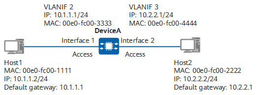
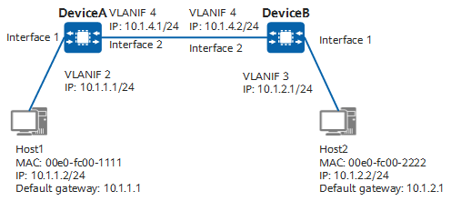
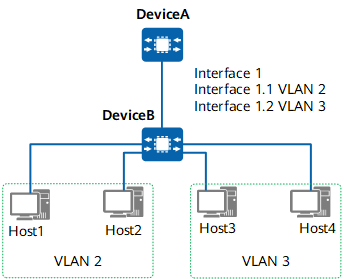

Inter-VLAN Communication Through a Single Device (Using VLANIF Interfaces)
In Figure 1, Host1 and Host2 connect to DeviceA, are located on different network segments, and belong to VLAN 2 and VLAN 3, respectively. After VLANIF 2 and VLANIF 3 are created on DeviceA and allocated with IP addresses, the default gateway addresses of Host1 and Host2 are set to the IP addresses of VLANIF 2 and VLANIF 3, respectively.
Figure 1 Using VLANIF interfaces to implement inter-VLAN communication through a single device
When Host1 sends a packet to Host2, the packet is transmitted as follows (assuming that no forwarding entry is created on DeviceA):
- Host1 determines that the destination IP address is on a different network segment from its own IP address, and therefore sends an ARP Request packet to request the gateway MAC address. The ARP Request packet carries the destination IP address 10.1.1.1 (gateway's IP address) and all-F destination MAC address.
- When the ARP Request packet reaches interface 1 on DeviceA, DeviceA tags the packet with VLAN ID 2 (PVID of interface 1). DeviceA then records the mapping between the source MAC address, VLAN ID, and interface (00e0-fc00-1111, 2, interface 1) in its MAC address table.
- DeviceA determines that the packet is an ARP Request packet and the destination IP address is that of its own VLANIF 2. DeviceA then encapsulates VLANIF 2's MAC address 00e0-fc00-3333 into the ARP Reply packet and sends the packet through interface 1. In addition, DeviceA records the mapping between the IP address and MAC address of Host1 in its ARP table.
- After receiving the ARP Reply packet from DeviceA, Host1 records the mapping between the IP address and MAC address of VLANIF 2 on DeviceA in its ARP table and sends a packet to DeviceA. The packet carries the destination MAC address 00e0-fc00-3333 and destination IP address 10.2.2.2 (Host2's IP address).
- After the packet reaches interface 1 on DeviceA, DeviceA tags the packet with VLAN ID 2.
- DeviceA updates its MAC address table based on the source MAC address, VLAN ID, and inbound interface of the packet, and compares the destination MAC address of the packet with the MAC address of VLANIF 2. If they are the same, DeviceA determines that the packet should be forwarded at Layer 3 and searches for a Layer 3 forwarding entry based on the destination IP address. If no entry is found, DeviceA sends the packet to the CPU, which then searches for a routing entry to forward the packet.
- The CPU searches the routing table based on the destination IP address of the packet and determines that the destination IP address matches a directly connected network segment (the network segment where VLANIF 3 is located). The CPU continues to search the ARP table but finds no matching ARP entry. As a result, DeviceA broadcasts an ARP Request packet with the destination address of 10.2.2.2 to all interfaces in VLAN 3 through interface 2.
- After receiving the ARP Request packet, Host2 determines that the destination IP address in the packet is its own IP address and sends an ARP Reply packet with its own MAC address. At the same time, Host2 records the mapping between the MAC address and IP address of VLANIF 3 to its ARP table.
- After interface 2 on DeviceA receives the ARP Reply packet, DeviceA tags the packet with VLAN ID 3 and records the mapping between the MAC address and IP address of Host2 in its ARP table. Before forwarding the packet from Host1 to Host2, DeviceA removes the tag with VLAN ID 3 from the packet. At the same time, DeviceA records the mapping between the Host2's IP address, MAC address, VLAN ID, and outbound interface in its Layer 3 forwarding table.
At this point, Host1 accesses Host2 successfully. The same process is used for Host2 to access Host1.
Inter-VLAN Communication Through Multiple Devices Using VLANIF Interfaces
When hosts in different VLANs connect to multiple devices, you need to configure static routes or a dynamic routing protocol in addition to configuring VLANIF interfaces and their IP addresses, as the IP addresses of VLANIF interfaces can only be used to generate direct routes.
In Figure 2, Host1 and Host2 are located on different network segments, connect to DeviceA and DeviceB respectively, and belong to VLAN 2 and VLAN 3, respectively. DeviceA and DeviceB connect to hosts using access interfaces and connect to each other using trunk interfaces. On DeviceA, VLANIF 2 and VLANIF 4 are created and allocated with IP addresses 10.1.1.1 and 10.1.4.1, respectively. On DeviceB, VLANIF 3 and VLANIF 4 are created and allocated with IP addresses 10.1.2.1 and 10.1.4.2, respectively. Static routes are configured on DeviceA and DeviceB. On DeviceA, the destination network segment in the static route is 10.1.2.0/24 and the next-hop address is 10.1.4.2. On DeviceB, the destination network segment in the static route is 10.1.1.0/24 and the next-hop address is 10.1.4.1.
Figure 2 Using VLANIF interfaces to implement inter-VLAN communication through multiple devices
When Host1 sends a packet to Host2, the packet is transmitted as follows (assuming that no forwarding entry is created on DeviceA and DeviceB):
- The first six steps are the same as steps 1 to 6 in Inter-VLAN Communication Through a Single Device (Using VLANIF Interfaces). After those steps are complete, DeviceA sends the packet to its CPU which then searches the routing table to forward the packet.
- The CPU of DeviceA searches its routing table based on the destination IP address 10.1.2.2, and finds a static route with the destination network segment of 10.1.2.0/24 and a next-hop address of 10.1.4.2. The CPU continues to search its ARP table but finds no matching ARP entry. Therefore, DeviceA broadcasts an ARP Request packet with the destination address 10.1.4.2 to all interfaces in VLAN 4. Interface 2 on DeviceA sends the ARP Request packet to interface 2 on DeviceB without removing the tag from the packet.
- After the ARP Request packet reaches DeviceB, DeviceB determines that the destination IP address of the ARP Request packet is the IP address of its own VLANIF 4. DeviceB then sends an ARP Reply packet with the MAC address of VLANIF 4 to DeviceA.
- Interface 2 on DeviceB sends the ARP Reply packet to DeviceA. After DeviceA receives the ARP Reply packet, it records the mapping between the MAC address and IP address of VLANIF 4 to its ARP table.
- Before forwarding the packet of Host1 to DeviceB, DeviceA changes the destination MAC address of the packet to the MAC address of VLANIF 4 on DeviceB, and the source MAC address to the MAC address of its own VLANIF 4. In addition, DeviceA records the forwarding entry (10.1.2.0/24, destination MAC address, VLAN, and outbound interface) in its Layer 3 forwarding table. Similarly, the packet is directly sent to interface 2 on DeviceB.
- After DeviceB receives the packet of Host1 forwarded by DeviceA, steps 6 to 9 in Inter-VLAN Communication Through a Single Device (Using VLANIF Interfaces) are performed. In addition, DeviceB records the forwarding entry (Host2's IP address, MAC address, VLAN, and outbound interface) in its Layer 3 forwarding table.
At this point, Host1 accesses Host2 successfully. The same process is used for Host2 to access Host1.
Inter-VLAN Communication Through a Single Device Using Layer 3 Sub-interfaces
In Figure 3, hosts on the network belong to different VLANs and are located in different network segments. Host1 and Host2 belong to VLAN 2, and Host3 and Host4 belong to VLAN 3. DeviceA is connected to DeviceB through Ethernet interface 1. On DeviceA, two Layer 3 sub-interfaces (interface 1.1 and interface 1.2) are created on interface 1 and configured with 802.1Q tag termination for VLAN 2 and VLAN 3, respectively. These sub-interfaces are also allocated with IP addresses to ensure that they are reachable at Layer 3. The IP address of the default gateway for hosts in a specific VLAN is set to the IP address of the sub-interface in this VLAN.
Figure 3 Using Layer 3 sub-interfaces to implement inter-VLAN communication through a single device
When Host1 sends a packet to Host3, the packet is transmitted as follows (assuming that no forwarding entry is created on DeviceA):
- Host1 determines that Host3's IP address is on a different network segment from its own IP address, and sends an ARP Request packet to request the gateway MAC address. The ARP Request packet carries the destination IP address 10.1.1.1 (gateway's IP address) and all-F destination MAC address.
- When the ARP Request packet reaches interface 1 on DeviceA, DeviceA records the mapping between the source MAC address, VLAN ID, and interface (00e0-fc00-1111, 2, interface 1) in its MAC address table.
- DeviceA determines that the packet is an ARP Request packet and the destination IP address is the IP address of its own interface 1.1. DeviceA then responds with an ARP Reply packet that is encapsulated with the MAC address 00e0-fc00-3333 of interface 1.1 corresponding to VLAN 2. In addition, DeviceA records the mapping between the IP address and MAC address of Host1 in its ARP table.
- After receiving the ARP Reply packet from DeviceA, Host1 records the mapping between the IP address and MAC address of interface 1.1 on DeviceA in its ARP table and sends a packet to DeviceA. The packet carries the destination MAC address 00e0-fc00-3333 and destination IP address 10.2.2.2 (Host3's IP address).
- After the packet reaches interface 1 on DeviceA, DeviceA updates the MAC address table based on the source MAC address, VLAN ID, and inbound interface of the packet and compares the destination MAC address of the packet with the MAC address of interface 1.1. DeviceA then forwards the packet at Layer 3 after determining that the two MAC addresses are the same. As the IP address of Host3 matches a direct route, the packet is forwarded through interface 1.2 associated with VLAN 3.
- DeviceA functions as the gateway of hosts in VLAN 3, and sends an ARP Request packet to all interfaces in VLAN 3 where the destination Host3 is located. The destination IP address of the ARP request packets is 10.2.2.2.
- After receiving the ARP Request packet, Host3 determines that the destination IP address in the packet is its own IP address and sends an ARP Reply packet with its own MAC address. In addition, Host3 records the mapping between the MAC address and IP address of interface 1.2 (associated with VLAN 3) in its ARP table.
- After DeviceA receives the ARP Reply packet from Host3, DeviceA records the mapping between the MAC address and IP address of Host3 in its ARP table and then forward the packet from Host1 to Host3. At the same time, DeviceA records the mapping between the Host3's IP address, MAC address, VLAN ID, and outbound interface in its Layer 3 forwarding table.
At this point, Host1 accesses Host3 successfully. The same process is used for Host3 to access Host1.